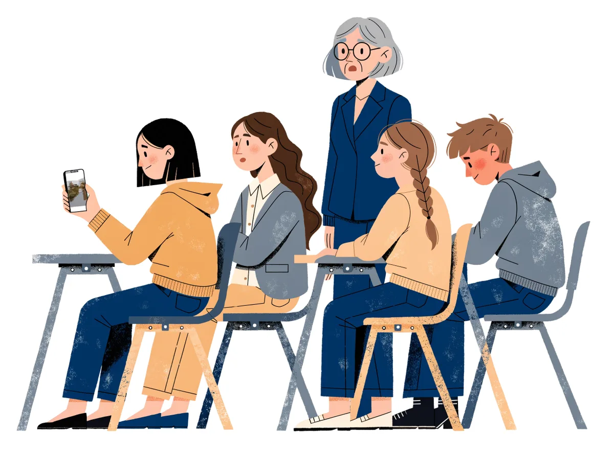
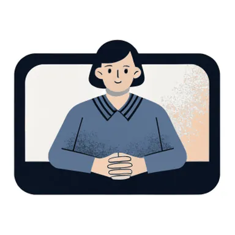
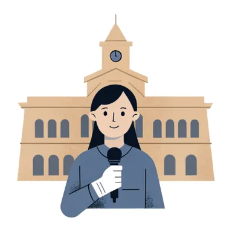
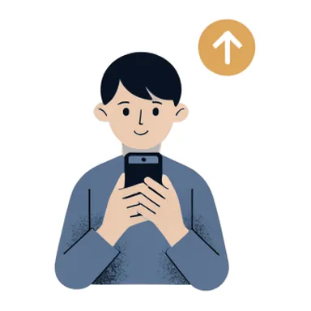
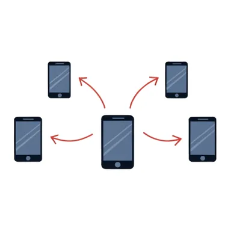
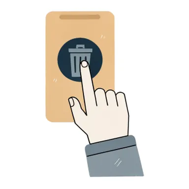
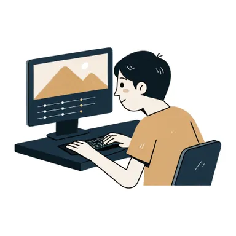
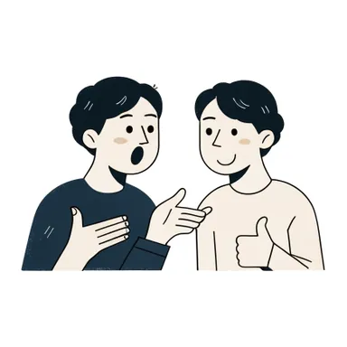
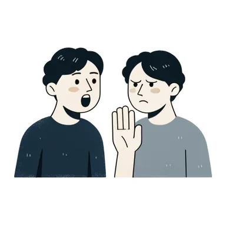

먼저 생각해 보세요.
Die Nachricht wurde gestern Abend gepostet. 이 문장에서 알 수 없는 것은 무엇인가요?
Passiv 문장은 누가 했는지 말하지 않아도 돼요.

11월의 어느 수요일 아침, 9b 교실이 절반이나 비어 있어요. 어젯밤 반 채팅방에 '내일 학교 안 감!'이라는 메시지가 돌았거든요. 그 메시지는 사실이었을까요?
눌러서 들어 보세요.
먼저 생각해 보세요.
Die Nachricht wurde gestern Abend gepostet. 이 문장에서 알 수 없는 것은 무엇인가요?
Passiv 문장은 누가 했는지 말하지 않아도 돼요.
Lektion 3의 낱말 다섯 개를 다시 떠올려 보세요.
문법 Passiv Präteritum (wurde … veröffentlicht), Passiv mit Modalverben (muss … geprüft werden)
이 과를 마치면 뉴스와 SNS의 정보를 따져 보고, 의견과 근거를 말하고, 찬성하거나 반대할 수 있어요.
11월의 어느 수요일 아침, 9b 교실이에요. 자리가 절반이나 비어 있어요.
들으면서 찾아보세요. 어젯밤 반 채팅방에 어떤 메시지가 올라왔나요?
며칠 뒤, 팟캐스트 팀이 쾰른의 신문 기자 Frau Berger를 영상 통화로 인터뷰해요.
들으면서 찾아보세요. Frau Berger가 알려 주는 세 가지 질문은 무엇인가요?
두 대화를 듣고 답하세요.
Wie viele Schülerinnen und Schüler sind am Mittwochmorgen in der Klasse?
Die Nachricht im Klassenchat war wahr.
Die Schule war trocken und offen.
Was hat Yuna mit dem Foto gemacht?
Wann wurde das Foto gemacht?
In der Redaktion von Frau Berger braucht man immer zwei Quellen.
Frau Berger가 말한 세 가지 질문에 들어 있지 않은 것은 무엇인가요?
Was rät Frau Berger?
낱말 32개예요. 낱말이나 예문 앞의 단추를 누르면 소리가 나요. 명사는 der, die, das를 색으로 구분했어요.
die Medien (Pl.) 미디어, 매체
Die Medien berichten über den Regen.여러 매체가 비 소식을 전해요.
der Artikel, die Artikel 기사
Elif schreibt einen Artikel für die Schülerzeitung.Elif가 학교 신문에 실을 기사를 써요.
die Schlagzeile, die Schlagzeilen (기사의) 큰 제목
Die Schlagzeile ist kurz und groß.큰 제목은 짧고 크게 써요.
die Quelle, die Quellen 출처
Aus welcher Quelle kommt die Nachricht?그 소식은 어디에서 나온 거예요?
die Meldung, die Meldungen 보도, 소식
Die Meldung war falsch.그 소식은 거짓이었어요.

die Sendung, die Sendungen 방송 프로그램
Die Sendung fängt um acht an.그 방송은 여덟 시에 시작해요.

berichten, hat berichtet 보도하다, 알리다
Die Zeitung berichtet über unsere Schule.신문이 우리 학교 소식을 전해요.
veröffentlichen, hat veröffentlicht 발표하다, 싣다
Die Zeitung veröffentlicht das Interview.신문이 그 인터뷰를 실어요.
die Redaktion, die Redaktionen 편집부
Die Redaktion prüft jeden Artikel.편집부가 기사를 하나하나 확인해요.
recherchieren, hat recherchiert 조사하다, 자료를 찾다
Emma recherchiert im Internet.Emma가 인터넷에서 자료를 찾아요.
das Netz 인터넷
Im Netz gibt es viele falsche Nachrichten.인터넷에는 거짓 소식이 많아요.

posten, hat gepostet (인터넷에) 올리다
Lukas postet ein Foto.Lukas가 사진을 올려요.

weiterleiten, hat weitergeleitet (메시지를) 전달하다
Bitte leite die Nachricht nicht weiter!그 메시지를 전달하지 마!
der Kommentar, die Kommentare 댓글, 논평
Unter dem Video stehen viele Kommentare.영상 아래에 댓글이 많아요.

löschen, hat gelöscht 지우다
Ich lösche die Nachricht.나는 그 메시지를 지워요.
verbreiten, hat verbreitet 퍼뜨리다
Wer verbreitet dieses Gerücht?누가 이 소문을 퍼뜨려요?
das Gerücht, die Gerüchte 소문
Das ist nur ein Gerücht.그건 소문일 뿐이에요.
der Fakt, die Fakten 사실
Wir brauchen Fakten, keine Gerüchte.우리는 소문이 아니라 사실이 필요해요.
die künstliche Intelligenz 인공지능. 짧게 KI
Das Bild wurde von einer KI gemacht.그 그림은 인공지능이 만들었어요.

bearbeiten, hat bearbeitet 손보다, 편집하다
Das Foto wurde bearbeitet.그 사진은 손본 거예요.
prüfen, hat geprüft 확인하다, 따져 보다
Prüf zuerst die Quelle!먼저 출처를 확인해!
erkennen, hat erkannt 알아보다, 알아차리다
Wie erkennt man Fake News?가짜 뉴스는 어떻게 알아봐요?
wahr 참인, 사실인
Ist die Geschichte wahr?그 이야기는 사실이에요?
falsch 틀린, 거짓인
Die Nachricht ist falsch.그 메시지는 거짓이에요.
zweifeln, hat gezweifelt 의심하다
Ich zweifle an dieser Meldung.나는 이 소식이 의심스러워요.
kritisch 비판적인, 꼼꼼히 따지는
Bleib kritisch!늘 따져 봐!
gefährlich 위험한
Falsche Nachrichten können gefährlich sein.거짓 소식은 위험할 수 있어요.
behaupten, hat behauptet 주장하다
Er behauptet, dass morgen schulfrei ist.그는 내일 학교에 안 가도 된다고 주장해요.
der Beweis, die Beweise 증거
Hast du einen Beweis?증거 있어?
das Argument, die Argumente 근거, 논거
Das ist ein gutes Argument.그건 좋은 근거예요.

zustimmen, hat zugestimmt 동의하다
Ich stimme dir zu.나는 네 말에 동의해.

widersprechen (du widersprichst, er widerspricht) 반대하다, 반박하다
Da muss ich dir widersprechen.그 말에는 반대해야겠어.
이 과의 낱말로 여덟 문제를 풀어요.
예문을 보고 답해 보세요.
Das Foto wurde vor fünf Jahren gemacht. 누가 찍었는지 나와 있나요?
규칙
Passiv는 누가 했는지보다 무슨 일이 일어났는지가 중요할 때 써요. 지금 일은 wird + 과거분사로, 지난 일은 wurde + 과거분사로 말해요. 과거분사는 문장 맨 끝에 와요.
| 주어 | werden의 과거 | 과거분사 |
|---|---|---|
| die Nachricht | wurde | gepostet |
| die Fotos | wurden | gemacht |
| ich | wurde | gefragt |
| du | wurdest | gefragt |
주의 누가 했는지 말하려면 von + 3격을 써요. Die Nachricht wurde von vielen Schülern geteilt.
예문을 보고 답해 보세요.
muss geprüft werden에서 맨 끝에 오는 낱말은 무엇인가요?
규칙
조동사와 함께 쓸 때는 조동사가 둘째 자리에 오고, 문장 끝에 과거분사 + werden이 와요. werden은 모양이 바뀌지 않아요.
| man 문장 | Passiv |
|---|---|
| Man muss die Quelle prüfen. | Die Quelle muss geprüft werden. |
| Man kann Fotos bearbeiten. | Fotos können bearbeitet werden. |
| Man darf das Foto nicht posten. | Das Foto darf nicht gepostet werden. |
주의 man으로 시작하는 문장은 Passiv로 바꿔 말할 수 있어요. 뜻은 같아요.
예문을 보고 답해 보세요.
Meiner Meinung nach 바로 뒤에는 무엇이 오나요?
규칙
Meiner Meinung nach는 문장의 첫 자리를 차지해요. 그래서 바로 뒤에 동사가 와요. Ich finde, dass …와 Ich bin sicher, dass …, Ich bin dafür, dass …에서는 dass 문장의 동사가 맨 끝에 와요.
| 찬성 | 반대 |
|---|---|
| Ich bin dafür. | Ich bin dagegen. |
| Ich stimme dir zu. | Da muss ich dir widersprechen. |
| Du hast recht. | Das sehe ich anders. |
주의 근거는 weil이나 denn으로 붙여요. Ich bin dagegen, weil das gefährlich ist.
팟캐스트의 '사실 확인' 시간이에요. 듣고 답하세요.
Der Fakten-Check
Elif Willkommen beim Fakten-Check. Heute prüfen wir drei Meldungen aus dem Netz.
Emma Meldung eins: Ab Dezember fängt die Schule erst um zehn Uhr an. Das wurde in einem Video behauptet.
Elif Falsch! Wir haben Frau Schneider gefragt. Die Schule fängt weiter um acht an.
Emma Meldung zwei: Für die Sporthalle wurden zwanzig neue Bälle gekauft.
Elif Wahr! Lukas hat die Bälle gestern gesehen.
Emma Meldung drei: Ein Foto zeigt Schnee auf dem Kölner Dom im Juli.
Elif Falsch! Das Foto wurde bearbeitet. Im Juli gibt es in Köln keinen Schnee.
Wie viele Meldungen werden geprüft?
Ab Dezember fängt die Schule um zehn Uhr an.
Die Schule fängt weiter um acht an.
Was wurde für die Sporthalle gekauft?
쾰른 대성당 사진은 왜 가짜인가요?
듣고 알맞은 것을 고르세요.
그 사진은 언제 찍혔나요?
Das Foto wurde vor fünf Jahren in einer anderen Stadt gemacht.
메시지를 받으면 먼저 무엇을 해야 하나요?
Jede Nachricht muss zuerst geprüft werden.
Lukas는 어떻게 생각하나요?
Meiner Meinung nach sollten Handys in der Pause erlaubt sein.
Emma는 무엇에 반대하나요?
Ich bin dagegen, dass man Fotos von anderen einfach postet.
학교 신문에 실린 기사예요. 읽고 답하세요.
Schulfrei? Leider nein!
Am Dienstagabend wurde im Klassenchat der 9b eine Nachricht gepostet: „Morgen schulfrei! Wegen des starken Regens stehen die Schulen unter Wasser.“
Die Nachricht wurde schnell verbreitet. In einer Stunde wurde sie mehr als hundertmal weitergeleitet.
Am Mittwochmorgen waren nur zwölf von 24 Schülerinnen und Schülern in der Klasse. Die anderen haben die Meldung geglaubt.
Eine Schülerin hat das Foto geprüft. Es wurde vor fünf Jahren in einer anderen Stadt gemacht.
Wer die falsche Nachricht geschrieben hat, weiß niemand. Unsere Bitte: Prüft jede Nachricht zuerst und teilt sie erst dann!
Wo wurde die Nachricht gepostet?
Wie oft wurde die Nachricht in einer Stunde weitergeleitet?
Am Mittwochmorgen waren alle Schülerinnen und Schüler in der Klasse.
Nur zwölf von 24 waren da.
Was war mit dem Foto?
기사는 독자에게 무엇을 부탁하나요?
화요일 밤의 반 채팅방이에요. 읽고 답하세요.
Klassenchat 9b, Dienstag, 21 Uhr
Leute, morgen schulfrei! Wegen des starken Regens stehen die Schulen unter Wasser. Bitte weiterleiten!
Super! Endlich lange schlafen. Ich leite es an meine Mannschaft weiter.
Moment. Woher hast du das, Jan? Wo ist die Quelle?
Das wurde mir von einem Freund geschickt. Mit Foto!
Auf der Seite der Schule steht nichts. Ich glaube das nicht.
Das Foto ist fünf Jahre alt. Es wurde in einer anderen Stadt gemacht. Bitte nicht mehr teilen!
Jan hat die Nachricht selbst geschrieben.
Sie wurde ihm von einem Freund geschickt.
Was macht Lukas mit der Nachricht?
Warum glaubt Emma die Nachricht nicht?
지난 일을 Passiv로 말해요. 알맞은 말을 고르세요.
Die Nachricht gestern Abend gepostet.
그 메시지는 어젯밤에 올라왔어요.
Die Fotos vor fünf Jahren gemacht.
그 사진들은 5년 전에 찍혔어요.
Das Interview wurde letzte Woche .
그 인터뷰는 지난주에 녹음됐어요.
Der Artikel wurde von Elif .
그 기사는 Elif가 썼어요.
Die Meldung wurde hundertmal .
그 소식은 백 번 전달됐어요.
Ich nicht gefragt.
나는 질문을 받지 않았어요.
조동사가 있는 Passiv예요. 알맞은 말을 고르세요.
Jede Nachricht muss geprüft .
문장 끝의 werden은 모양이 바뀌지 않아요.
Das Foto darf nicht werden.
Fake News schnell verbreitet werden.
Der Kommentar gelöscht werden.
Die Quelle soll immer .
Fotos können heute leicht werden.
의견을 말해요. 알맞은 말을 고르세요.
Meiner Meinung nach falsch.
바로 뒤에 동사가 와요.
Ich bin , dass wir Nachrichten prüfen. Das ist wichtig.
Ich finde, dass Fake News gefährlich .
Ich stimme zu.
zustimmen은 3격과 함께 써요.
Da muss ich dir . Ich sehe das anders.
Ich bin dagegen, das ist gefährlich.
denn 뒤에서는 동사가 둘째 자리에 와요.
낱말을 순서대로 눌러 문장을 만드세요.
그 메시지는 어제 올라왔어.
모든 소식은 확인해야 해.
내 생각에 그건 틀렸어.
나는 우리가 출처를 확인하는 데 찬성해.
낱말과 뜻을 짝지으세요.
듣고 그대로 써 보세요.
Das Foto ist nicht echt. 그 사진은 진짜가 아니야.
Prüft zuerst die Quelle! 먼저 출처를 확인하세요!
Ich stimme dir zu. 나는 네 말에 동의해.
Woher kommt die Nachricht? 그 소식은 어디서 나왔어?
Wer hat das geschrieben? 누가 쓴 거야?
Gibt es eine Quelle? 출처가 있어?
Das glaube ich nicht. 나는 그거 안 믿어.
Meiner Meinung nach … 내 생각에는 …
Ich finde, dass … 나는 ~라고 생각해.
Ich bin sicher, dass … 나는 ~라고 확신해.
zum Beispiel … 예를 들면 …
Ich bin dafür. 나는 찬성이야.
Ich stimme dir zu. 네 말에 동의해.
Du hast recht. 네 말이 맞아.
Das sehe ich auch so. 나도 그렇게 생각해.
Ich bin dagegen. 나는 반대야.
Da muss ich dir widersprechen. 그 말에는 반대해야겠어.
Das sehe ich anders. 나는 다르게 생각해.
Das stimmt nicht ganz. 꼭 그렇지는 않아.
대화 A에서 역할을 하나 고르세요. 상대의 말은 음성으로 나오고, 내 차례에는 직접 말해요.
내 생각을 적으세요. 완성된 문장을 소리 내어 읽어 보세요.
Nachrichten lese ich oft auf dem Handy.
Meiner Meinung nach sind nicht alle Nachrichten im Netz wahr.
Ich bin dafür, dass wir in der Schule über Fake News sprechen.
Ich bin dagegen, dass man Fotos ohne Quelle teilt.
Meine Meinung: Fake News im Klassenchat
반 채팅방에 돈 거짓 메시지에 대해 학교 신문에 의견을 써요. 일곱 문장쯤 써요.
Letzte Woche wurde in unserem Klassenchat eine falsche Nachricht gepostet. Sie wurde hundertmal weitergeleitet, aber sie wurde nicht geprüft. Meiner Meinung nach ist das gefährlich, denn viele Schüler haben die Meldung geglaubt. Ich bin dafür, dass wir im Unterricht über Fake News sprechen. Ich bin dagegen, dass man Fotos ohne Quelle teilt. Jede Nachricht muss zuerst geprüft werden. Mein Rat: Bleibt kritisch!
다 쓴 뒤에 확인해 보세요.
Ich kann Nachrichten und Informationen aus dem Netz kritisch prüfen.인터넷에서 본 소식과 정보를 꼼꼼히 따져 볼 수 있어요.
Ich kann meine Meinung sagen und erklären, warum ich so denke.내 의견을 말하고 왜 그렇게 생각하는지 설명할 수 있어요.
Ich kann anderen zustimmen und widersprechen.다른 사람의 말에 찬성하고 반대할 수 있어요.